충남대학교 컴퓨터공학과 조은선 교수님의 "컴파일러 개론" 강의를 필기한 내용입니다.
다소 잘못된 내용과 구어적 표현 이 포함되어 있을 수 있습니다.
LL(1) 파서 구현 방법
- Recursive descent parser
- 이름처럼 recursion을 이용하는 방법이고 Non-terminal마다 한개의 procedure(function이라고 이해해도 될듯)을 두는 방법으로 구현한다
- 장점은 직관적이고 쉽다는 것
- 단점은 생성규칙이 바뀌면 구문분석기도 바꿔야한다는 점이다.
- Predictive parser
- 얘는 생셩규칙이 바뀌어도 구문분석기를 다 뜯어고칠 필요 없이 파싱테이블이라는것만 고치면 된댄다
- 장점은 생성규칙이 바뀌어도 바꿀게 많지 않다는 점이다
Recursive descent parser
- 일단 모든 Non-terminal과 Terminal에 대해 procedure을 하나씩 마련한다
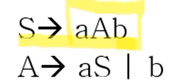
- 위와 같은 문법에 대한 파서를 구현하려고 할 때
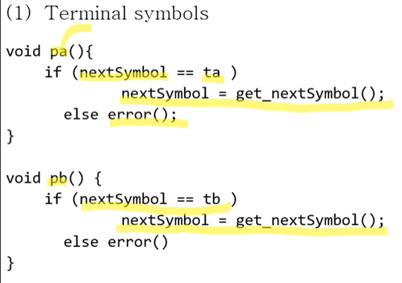
- 위 그림처럼 Terminal 마다 하나씩 함수를 마련해놓는다
- Terminal symbol의 처리는 위 그림처럼 nextSymbol이 해당 함수가 처리하고자 하는 놈이 맞다면 다음 symbol을 받아 nextSymbol에 넣어주고, 아니라면 에러를 던지는 방식으로 작동한다
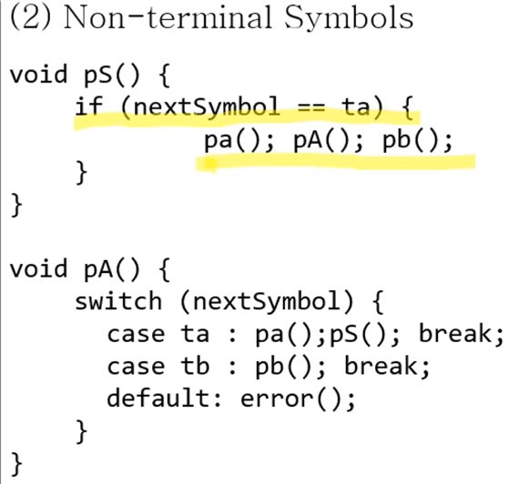
- 그리고 Non-terminal에 대해서도 함수를 하나씩 만들되 만드는 방법은
- 일단 S에 대해서는 S의 FIRST는 {a}이기 때문에 nextSymbol이 a가 맞는지 확인한다
- 만약 맞다면 S → aAb이기 때문에 a를 처리하는 함수, A를 처리하는 함수, b를 처리하는 함수를 한번씩 호출해주게 된다
- 그리고 A에 대해서는 FIRST(A)가 {a, b}이기 때문에 스위치문을 돌려 nextSymbol이 a일때랑 b일때를 처리해준다
- a일때는 A → aS를 적용하기 위해 a를 처리하는 함수, A를 처리하는 함수를 한번씩 호출하고
- b일때는 A → b를 적용하기 위해 b를 처리하는 함수를 호출해준다
- FIRST()만 보고 switch를 활용해 구현을 하는 방식이므로 아주 간단하고 쉬우며, 이런식으로 구문분석이 가능한 이유는 이 문법이 LL(1)이기 때문인 것이다 - 결정적이기 때문!
- gcc가 RDP로 구현이 되어 있더라
Predictive parser
- 일단 얘는 Recursive descent parser 의 구문분석기를 자주 바꿔야 되는 문제점을 해결하고자 나온 것인데
- 생셩규칙이 바뀌어도 구문분석기의 구현 방식에는 비슷비슷한 것들이 많다는 점에 착안해 자동화할 수 있는 부분은 최대한 자동화한 방식이다
- 즉, 어차피 Terminal은 지금 토큰을 확인하는 과정만 하고 Non-terminal은 FIRST에 따라서 지금 토큰을 switch로 돌려 그에 맞는 생성규칙의 함수만 호출해주면 되니까 이러한 것들은 자동화해서 만들고 대신 문법들만 파싱 테이블에 저장하도록 하여 함수들을 생성할때 파싱테이블을 참조하여 함수들을 생성하고, 수정할 일이 있으면 파싱 테이블만 고치면 되게하는 방식인 것
- Predictive parser의 경우에는 Push-Down Automata(PDA) 를 이론적 배경으로 하게 되는데
- 이놈은 정규표현식이 Finite State Automata와 동일한 표현력을 가졌고 Lexer를 만들때 이걸 가지고 만들었듯이
- Parser에서는 CFG를 사용하므로 이것과 표현력기 같은 Push Down Automata를 이용해 Parser를 만들게 되는 것
- PDA는 FSA의 각 상태에 스택 메모리가 추가된 형태라고 생각하면 된다
작동방식
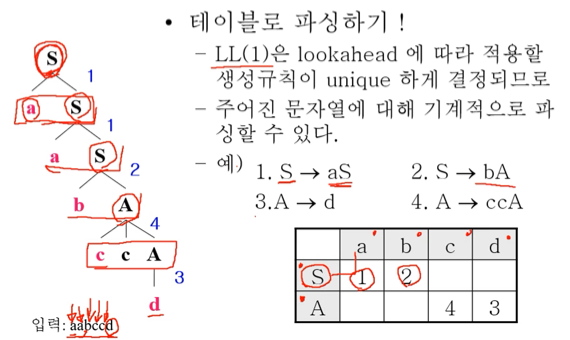
- 딱 위에 표만 봐도 감이 올거임
- 위같은 형태로 표를 만들어 주면
- 현재 Non-terminal에 해당하는 행과
- nextSymbol에 해당하는 열이 만나는 지점에 있는 번호의 생성규칙을 기계적으로 적용하는 방식으로 작동하게 된다
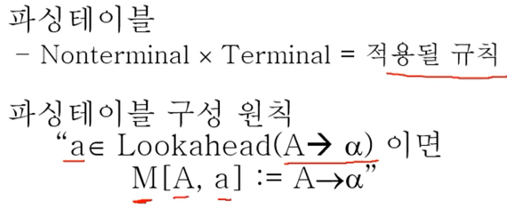
- 위의 파싱 테이블 정의를 보면 결국에는 맞는말이다
- 걍 저 예시 보는게 이해 더 잘됨
- 절차는
- 표를 우선 만들어준다 - 가로축 맨 마지막에 $ 넣는거 잊지 말지어다
- 생성규칙 하나에 대해 해당 생성규칙의 RHS의 모든 FIRST 원소에 대해 LHS과 만나는 지점에 생성규칙 번호를 적어준다
- 만약 FIRST에 널이 들어가 있다면, FOLLOW(LHS)의 원소들에 대해서도 위와 같은 작업을 해준다
예제
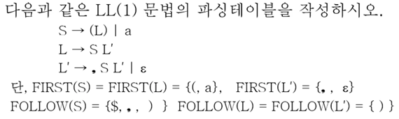
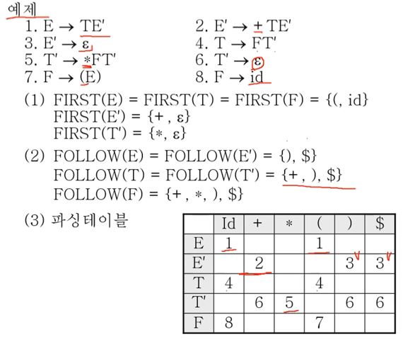
파싱 테이블과 모호성
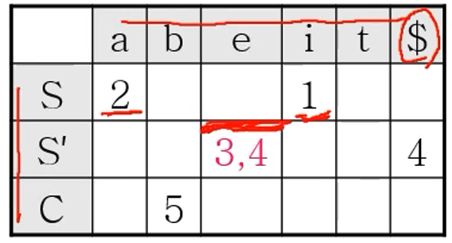
- 테이블을 그려봤더니 이것처럼 한 셀에 두개가 나오는 경우에는 결정적으로 생성규칙을 선택하지 못하기 때문에 모호하고 LL(1)이 아니다
Predictive parser의 구조
- 알고리즘 괄호쌍 문제 풀때 스택을 이용했듯이 여기서도 스택을 이용하게 된다
- 왜냐면 괄호쌍 문제도 결국에는 트리의 형태이기 때문
- 전체를 감싸는 괄호와 그 안의 괄호들이 있기 때문에 트리로 표현될 수 있고, 이 문제를 해결하기 위해 스택을 사용하기 때문에 파스 트리를 만드는 것에 있어서도 스택을 이용할 수 있다
- 이것은 예제로 보는게 더 편할거같다
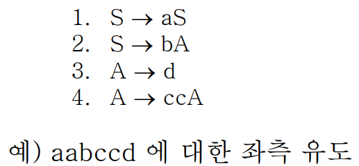
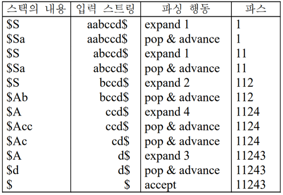
- 위와 같은 예제가 있다고 해보자
- 일단 처음에는 $(EOF)와 시작심벌(S)로 시작한다
- 그리고 하는 일은 스택에 있는 Non-terminal이랑 입력스트링의 맨 처음 Terminal을 보고 파스 테이블에서 생성규칙을 가져오는 것이다
- 그럼 지금 포인터가 맨 처음의 a이기 때문에 S와 a에 맞는 1번 행동을 하게 되고 이것이 저 파싱 행동에 있는 expand 1이다.
- expand라는 것은 생성 규칙에 따라서 스택의 내용을 늘린다는 뜻이다. 그리고 이때 중요한 것은 생성규칙에 적혀있는 것의 역순으로 스택에 들어가게 된 다는 것이다
- 보면 expand 1일때 1번 생성규칙은 aS지만 스택에 들어가 있는 내용은 Sa인 것을 볼 수 있다 - 역순으로 스택에 추가되기 때문
- expand한 뒤에는 pop & advance과정이 수행된다
- 이것은 스택의 제일 위에 있는 Terminal이랑 입력스트링의 nextSymbol이랑 똑같을 경우 스택에서는 pop을 하고 입력 스트링에서는 포인터를 하나 옆으로 움직이기 때문에 advance라는 용어를 쓰게 되는 것이다
- 그리고 이 과정을 반복하게 된다
- 스택의 top이 Non-terminal이면 nextSymbol을 보고 생성 규칙을 선택하는 expand를 거치게 되고, top이 terminal이라면 nextSymbol과 비교해 같다면 pop & advance를 하는 것을 반복한다
- 그리고 마지막으로 top에 $가 들어있고 입력 스트링에도 $가 남아있다면 정상적으로 파싱이 완료된 것이므로 accept를 하고, 만약에 중간에 terminal이랑 nextSymbol이랑 다르거나 $가 제대로 나오지 않는다면 error를 반환하게 된다
- 아래는 예제다
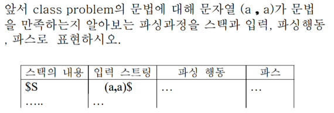